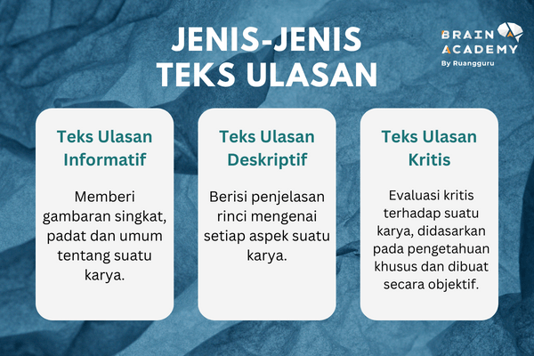
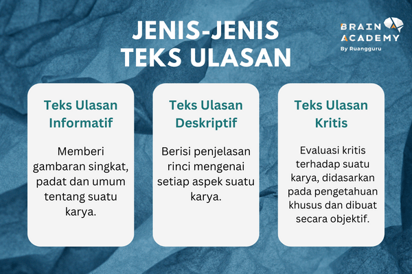
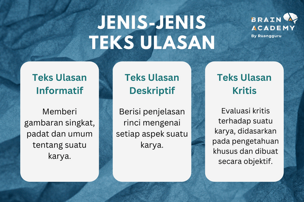

Dibuat oleh Aditya 8E/01
Dalam pelajaran Bahasa Indonesia aku belajar tentang hakikat teks ulasan. Kami pelajari bagaimana menulis teks resensi yang baik. Kami disuruh menulis teks resensi dan merekam video tentang hotel/restoran yang kita mengunjung, dimana kami harus kasih tahu latar belakang, identitas, deskripsi, penilaian hotel dan perbandingan hotel lain.
Berikutnya teks resensiku
Novotel Solo dibuka pada tahun 1997, dan mendapat renovasi pada tahun 2012. Menurut wawancara arsitek hotel, Atelier 6, pembangunan hotel sudah dibahaskan sejak 1991, oleh pendiri dan pemilik Sun Motor Group, Imelda Sundoro. Awalnya, Hotel Novotel Solo dirancang untuk punya 60 kamar saja. Akhirnya dibangun dengan kapasitas 142-145 kamar, supaya sesuai dengan ajaran fengsui dan geomansi Jawa. Arsitektur Hotel, Artelier 6, merancangkan gaya arsitektur Hotel Novotel Solo merupakan gaya 'art-deco'.
Novotel Solo adalah sebuah hotel dari merek All Accor yang terletak di Slamet Riyadi St No.272, Timuran, Banjarsari, Surakarta City, Central Java 57141, dan dimiliki oleh Sun Motor Group. Novotel Solo termasuk hotel 4 bintang, dan melihara rating 4.6 bintang. Salah satu cara booking kamar, adalah lewat situs All Accor yaitu 'https://all.accor.com/hotel/A088/index.id.shtml' atau no HPnya yaitu (0274) 5018888. Hotel ini hanya 20 menit dari Bandara Adisumarmo, Pasar antik Triwindu, museum Danar Hadi (Batik), Alun-alun Keraton Surakarta, dan beberapa museum pribadi. Hotel Novotel Solo memiliki 145 kamar, fasilitas kolam renang, kids playground, restoran, dan spa. Lobbynya hotel luas dan mewah seperti istana Inggris. Meskipun hotelnya udah agak tua, tempatnya masih bersih dan dirawat dengan baik. Pelayanan dari resepsionis, chef dan satpam pada baik dan cepat.
Saat masuk kamar hotel suasananya sejuk dan ademnya kamar langsung terasa. Lampu hanget kuning yang dipasang di dinding dan dibawah meja dan kasur membuat suasana santai, nyaman, dan menenangkan. Budaya Indonesia diintegrasikan di kamar hotel, seperti motif gunungan di tembok, dan desain batik di sampul buku menu. Kamar hotel dilengkapi sama dua kasur, Smart TV, kamar mandi, dan snackbar. Kamar hotel kami bersih dan sangat nyaman, dan diperlengkapi dengan kertas, pensil, telepon kabel, dan air minum 1 liter gratis. Kamar mandinya bersih dan dilengkapi alat mandi. Kasurnya nyaman dan empuk, serta sofanya dan tempat duduknya. Ruang kamarnya agak besar, dengan ukuran 28m^2, untuk kapasitas 2 orang.
Selain kelebihan, terdapat kekurangan dalam beberapa aspek kamar mengenai kebesaran kamar dan kebersihan. Kamar hotel dan kamar mandi agak sempit, hanya satu meja dan kursi, sedangkan minibarnya agak besar mengakibatkan ruangnya meja letak koper hanya cukup muat satu koper. Meski kamar hotelnya bersih, rapih dan tidak ada serangga, beberapa barang di sana seperti kaca toilet dan kran wastafel ada sisah bekas kerak.
Restoran Novotel buka setiap hari, disana ditawarkan makanan prasmanan setiap pagi. Makanan yang ditawarkan berkisa dari makanan tradisional, ke makanan khas eropa. Disana ada stasiun masak telor, dimana Anda bisa pesan telur, sosis, dan kue waffle. Dagingnya dan sayur cukup gurih, tetapi nasi goreng dan bihun kurang rasa. Kue dan jus yang di tawarin terlalu manis (rasanya manis, manisnya gula bukan manis alami). Interiornya restorannya kelihatannya modern dan istimewa, sambil menggunakan budaya Indonesia sebagai dekorasi. Letak meja dan tempat duduk cukup jarak, supaya mudah lewat dan ke meja sendiri. Juga ada tempat duduk di luar, suasananya di luar asrih dan lembab, sedangkan suasananya di dalam merasa dingin dan lebih kering.
Hotel yang saya akan membandingkan sama Hotel Novotel Solo, yang cukup mirip hotel Novotel yaitu Hotel Grand Mecure Jogja. Salah satu perbedaan dari antara hotelnya tersebut, adalah grand mecure tidak mengintegrasikan elemen budaya Indonesia di arsitekuturnya (lobby), sedangkan Novotel menggunakan elemen budaya Indonesia di desainnya. Perbandingan kedua mengenai makanan di restoran ‘breakfast’, yaitu seleksi makanan Grand Mecure lebih lengkap dibandingkan punya Novotel. Bahasan perbedaan ketiga, yaitu kamar hotel Novotel jauh lebih besar dan mewah (ukuran kamar 28m^2), dibanding punya Grand Mecure (ukuran kamar 24m^2). Perbandingan terakhir, yaitu harga, harga kamar kapasitas 2 orang Novotel untuk satu malam berkisar dari Rp 412.196 (tanpa breakfast) ke Rp 591.412, sedangkan harga kamar kapasitas 2 orang Grand Mecure untuk satu malam berkisar dari Rp 627.256 (tanpa breakfast) ke Rp 763.460,16.
Melihat melampui sisi buruknya, hotel ini sangat nyaman, dan bersih. Hotel Novotel Solo cocok untuk orang yang perlu nginep di Solo unutk perjalanan bisnis, bahkan jalan-jalan bersama keluarga. Fasilitasnya cukup lengkap, seperti spa, kolam, bahkan tempat main untuk anak-anak kecil. Harus hati-hati karena, jika Anda mau minum kopi harus bayar biaya tambahan. Selain itu hotel ini sangat baik, untuk yang ingin nginep di Solo untuk jalan-jalan.

Dibuat oleh Aditya 8E/01